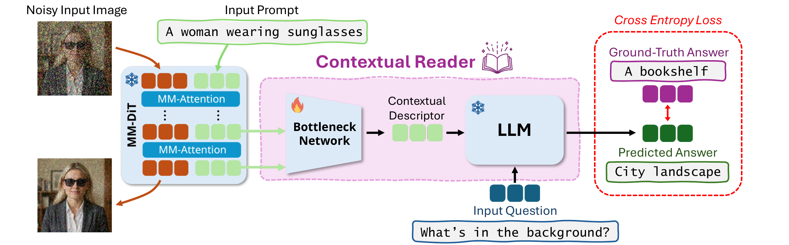
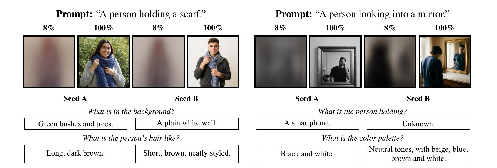
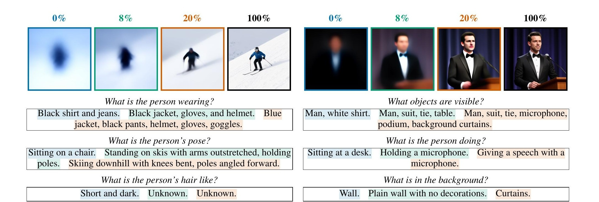
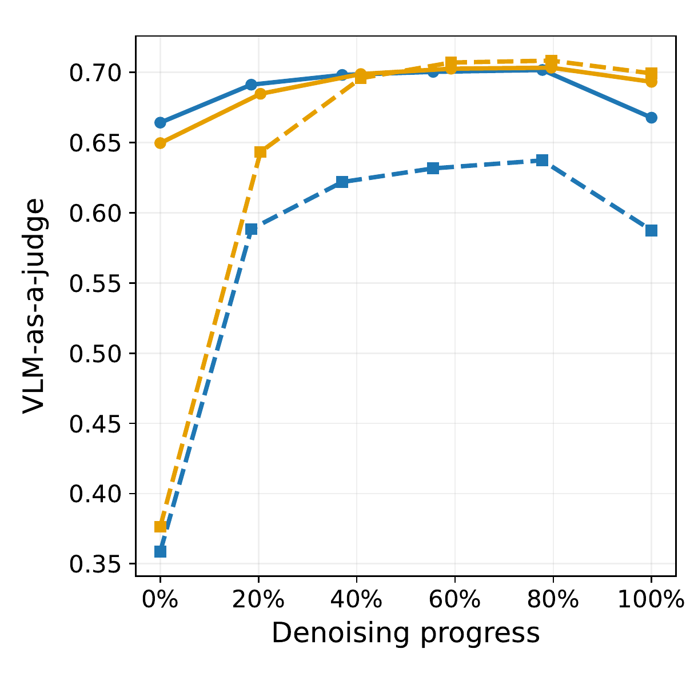
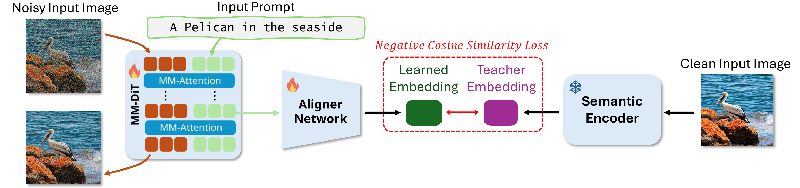

Preprint · 2026
Learning to Read the Contextual Tokens in Diffusion Transformers
1Tel Aviv University 2Cornell University *Equal contribution
Abstract
Multimodal Diffusion Transformers (MM-DiTs) jointly process visual and textual representations throughout generation. These models repeatedly update the text tokens through multimodal attention, forming dynamic contextual tokens whose function is not well understood. In this work, we introduce a framework for reading this contextual space through natural-language interrogation. We train a lightweight bottleneck network that maps intermediate contextual tokens into the input space of a frozen Large Language Model (LLM), allowing the LLM to answer questions about the emerging image directly from these hidden representations.
Our reader reveals that contextual tokens encode a rich, global representation of the emerging scene: generation-specific semantics, including attributes left underspecified by the prompt, are accessible surprisingly early in denoising, while increasingly fine-grained details become readable over time. Remarkably, this information remains decodable even when the MM-DiT receives an empty prompt, showing that contextual tokens accumulate substantial image-specific information from the evolving visual representation itself. We further find that generations with more readable contextual representations tend to receive higher human-preference scores.
Building on these observations, we introduce Contextual Alignment, a training technique that explicitly reinforces the visual-semantic information encoded in the contextual tokens, improving generation quality and distributional coverage. Together, our results establish contextual tokens as both an interpretable view into the internal dynamics of MM-DiTs and an effective target for improving generative models.
Overview
Reading and supervising the contextual space of MM-DiTs
MM-DiTs jointly update visual and textual representations throughout generation. Image tokens are accessible to analysis and have been extensively studied; the evolving text-side representation, which we refer to as contextual tokens, is less understood.
In this work, we suggest two complementary ways to study and utilize the contextual tokens:
Read them
Extract plain-text directly from the contextual tokens.
Contextual tokens capture detailed image semantics, even when no prompt is provided.
Supervise them
Reinforce their visual-semantic information during training.
Supervision improves generation quality and distributional coverage.
Reading the contextual tokens
The Contextual Reader
We train a lightweight bottleneck network that projects intermediate contextual tokens into the input space of an LLM. Because the LLM relies exclusively on the projected contextual tokens to answer visual questions, the bottleneck learns to extract the model’s internal visual semantics directly from the text-side representation.

Reading with a prompt
With the same prompt and different random seeds, the reader recovers details that the prompt leaves unspecified. At 8 percent of denoising, it can already identify differences in the background, appearance, and held objects while the visual predictions remain ambiguous.

Reading without a prompt
When the MM-DiT receives an empty prompt, the reader still recovers increasingly specific information from the contextual tokens. For example, the reader identifies that the person is “Holding a microphone” at 8%, and then corrects to “Giving a speech with a microphone” at 20%.

Readability increases during denoising
With the input prompt, the contextual tokens are informative from the beginning and become more readable as generation progresses. With an empty prompt, readability rises rapidly as image specific information enters the contextual space.
This trend is consistent across SD3.5 and FLUX.2.

Strengthening the representation
Contextual Alignment
We saw that the contextual tokens can become highly semantically informative even without direct access to the prompt. Because this representation emerges solely under the denoising objective, its semantic structure appears useful to the generation process itself. We therefore introduce Contextual Alignment (CoAl), a regularization objective that encourages an early contextual layer to align with a global semantic embedding of the clean image. The Aligner Network is used only during training, so inference cost remains unchanged.

Quantitative results
Full model training
We train a dual-stream MM-DiT on MS-COCO and add CoAl to each visual alignment method, testing whether contextual and visual alignment are complementary.
| Method | FID ↓ | CLIP ×10² ↑ | HPS ×10² ↑ | Precision ↑ | Recall ↑ |
|---|---|---|---|---|---|
| REPA | 4.95 | 24.20 | 21.38 | 0.591 | 0.338 |
| REPA + CoAl | 4.29 | 24.40 | 21.60 | 0.628 | 0.407 |
| HASTE | 4.87 | 24.21 | 21.42 | 0.609 | 0.361 |
| HASTE + CoAl | 4.44 | 24.32 | 21.56 | 0.623 | 0.400 |
| SRA | 5.89 | 23.49 | 20.37 | 0.515 | 0.261 |
| SRA + CoAl | 4.36 | 24.28 | 21.42 | 0.616 | 0.398 |
Fine tuning a pretrained model
We fine tune SD3-Medium on Fine-T2I and test each method individually. Visual alignment does not improve FID over vanilla flow matching, while CoAl achieves the best FID and recall.
| Method | FID ↓ | Precision ↑ | Recall ↑ |
|---|---|---|---|
| Base Model | 19.30 | 0.993 | 0.939 |
| Vanilla Flow | 17.18 | 0.993 | 0.966 |
| REPA | 17.45 | 0.993 | 0.966 |
| HASTE | 17.53 | 0.994 | 0.963 |
| SRA | 17.48 | 0.991 | 0.964 |
| Contextual Alignment | 16.75 | 0.993 | 0.969 |
Fine-tuning on Fine-T2I
Qualitative comparisons
Explore 20 prompts compared across the reference image, vanilla fine tuning, REPA, HASTE, SRA, and Contextual Alignment. The reference image is a real image from the Fine-T2I validation set.
On smaller screens, swipe each comparison row horizontally. Click any image to enlarge it.
BibTeX
@misc{dahary2026learningreadcontextualtokens,
title={Learning to Read the Contextual Tokens in Diffusion Transformers},
author={Omer Dahary and Etai Sella and Hadar Averbuch-Elor and Daniel Cohen-Or and Or Patashnik},
year={2026},
eprint={2610.06844},
archivePrefix={arXiv},
primaryClass={cs.CV},
url={https://arxiv.org/abs/2610.06844},
}